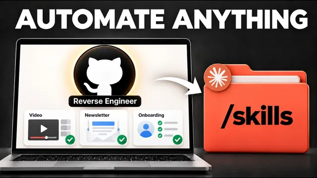

Claude 스킬, 쓰지 말고 역설계하세요

원본 영상 보기 →
- 설명보다 예시가 더 많은 정보를 담아요
- 나쁜 예시가 좋은 예시만큼 중요해요
- '확인됨·추론됨·알 수 없음' 태그가 환각을 막는 안전장치예요
한 줄 요약
Ben은 Claude 스킬(skill)을 만들 때 처리 단계를 일일이 설명하지 말고 잘 된 결과물과 안 된 결과물을 보여 준 뒤 Opus 5.5가 거꾸로 스킬을 설계하게 하라고 말해요. 화제의 'Reverse engineer anything' 저장소에서 출발해, 스킬을 역설계하는 3단계 과정과 실제 뉴스레터 사례까지 보여 주는 영상이에요.
전체 내용 정리
일주일 만에 별 20만 개를 받은 리버스 엔지니어링 저장소가 있어요
'Reverse engineer anything'이라는 GitHub 저장소가 일주일 만에 별 20만 개 이상을 받았어요. 지금 전 세계 사람들이 Opus 5.5와 이 저장소로 앱을 리버스 엔지니어링하고 있죠. Ben은 같은 원리를 쓰면 내 업무도 훨씬 빠르고 효율적으로 자동화할 수 있다고 봐요.
Ben은 세 번 창업한 경험이 있고 지금은 AI 에이전시와 전문가·사업가를 위한 최대 규모의 AI 커뮤니티를 운영하면서 AI로 업무를 자동화하거나 AI 비즈니스를 만드는 법을 가르친다고 자신을 소개해요. 이번 영상에서는 이 저장소가 무엇인지, 그 원리를 Claude 프롬프트와 스킬에 어떻게 적용하는지 설명하고 그 과정을 대신 처리해 주는 스킬도 공유합니다.
이 저장소는 본질적으로 Claude Code나 Codex에 붙는 AI 에이전트용 MCP이자 스킬이에요. 보안 연구원들이 소프트웨어 내부를 들여다보고 기능이나 앱을 리버스 엔지니어링할 때 쓰는 도구를 그대로 제공하죠. 앱을 지정하면 그 앱이나 기능이 어떻게 작동하는지 파악해 보고해요. 그러면 AI 에이전트가 자기 버전을 작성해서 똑같이 작동할 때까지 테스트할 수 있어요.
실제 코드를 복사하지는 않아요. 앱의 동작 방식을 연구한 뒤 다시 구축하죠. 리버스 엔지니어링 자체는 수십 년 전부터 있었고 AI로 해 온 사람도 이미 많았어요.
그런데 Ben이 더 중요하게 보는 건 따로 있어요. Opus 5.5는 이 저장소 없이도 이미 이 작업을 아주 잘한다는 점이에요. 사람들은 이 저장소나 Claude Opus 5.5로 포토샵, 일러스트레이터, 애프터 이펙트 같은 어도비 제품군 전체를 다시 만들고 있어요. Wispr Flow나 Screen Studio 같은 도구를 복제하거나 필요한 기능만 골라 앱을 새로 만들기도 하고 Pieter Levels처럼 기술 스택 전체를 다시 짜기도 하고요.
다만 Ben은 소프트웨어 스택을 통째로 다시 만드는 건 추천하지 않아요. 유지보수와 버그 수정 문제가 여전히 남아 있고 기존 소프트웨어 가격을 생각하면 들인 시간만큼 가치가 크지 않다는 이유예요.
앱을 안 만드는 사람에게도 해당되는 이야기예요
"나는 앱 만드는 사람이 아닌데 무슨 상관이지?" 싶을 수 있어요. Ben은 같은 원리가 앱 제작에만 국한되지 않고 업무 자동화에도 그대로 통한다고 설명해요.
Ben은 새 프런티어 모델을 쓸 때 사고방식을 바꿔야 한다고 확신해요. 작업을 설명하거나 좋은 결과물을 정의하려 애쓰지 말고 이미 가지고 있는 훌륭한 예시나 결과물을 Claude에게 보여 주기만 하라고 해요. 그러면 모델이 스스로 역설계해서 그런 결과를 다시 얻으려면 어떻게 해야 할지 파악해요. 예를 들어 회계 업무를 하나하나 설명하는 대신, 지난달에 완료한 회계 시트를 보여 주고 새 달 업무를 어떻게 처리할지 스스로 파악하게 하는 식이죠.
많은 사람이 모델 성능이 낮던 시절의 습관이 남아 해야 할 일을 자세히 설명하는 데 익숙해요. 하지만 Anthropic조차 "예시는 설명만 하는 것보다 원하는 스타일과 상세 수준을 Claude에게 훨씬 명확하게 전달한다"고 말한다고 Ben은 짚어요. 모델이 발전할수록 좋은 결과물을 보여 주는 것만으로 충분할 때가 많아진다고 하고요.
스킬도 설명 대신 예시에서 시작하세요
그래서 Ben이 제안하는 원칙은 결과물을 먼저 생각하고 시작하라예요. 일회성 작업뿐 아니라 반복 작업이나 스킬을 만들 때도 똑같이 적용돼요. 스킬이 낯설다면 Claude가 실행될 때마다 따르는 일종의 업무 지침서라고 생각하면 됩니다.
가능하다면 만들려는 스킬의 처리 단계를 설명하지 말고 훌륭한 결과물 예시에서 시작해 Opus 5.5 같은 모델이 그 예시에서 스킬과 전체 프로세스를 직접 역설계하게 하라는 조언이에요. Ben은 직접 해 보면 이쪽이 훨씬 빠르고 결과로 나온 스킬의 품질도 더 좋다고 말해요.
Ben은 이 원칙으로 뉴스레터 작성 스킬을 다시 만들었어요. 성과가 가장 좋았던 뉴스레터 6개와 가장 저조했던 6개를 모델에게 주고 잘된 뉴스레터들의 구조·문구·행동 유도 문구(CTA)에서 패턴을 찾게 했죠. 그다음 Opus 5.5가 고성과 뉴스레터를 만드는 스킬과 프로세스를 역설계하게 했어요. 그 결과 프로세스를 설명하고 예시 몇 개를 붙여 만들었던 원래 스킬보다 훨씬 나은 스킬이 나왔다고 해요.
훌륭한 예시가 정말 훌륭한 스킬로 이어져요. Ben이 새 모델로 스킬을 만들 때 기억하라고 강조하는 원칙이에요.
스킬을 역설계하는 3단계는 이렇게 진행돼요
1단계는 좋은 결과물 예시 모으기예요. 이 일을 Claude에게 대신 맡겨도 돼요. 실제 성과 데이터가 있다면 가장 잘된 것과 가장 안 된 것을 함께 모아야 Claude가 그 사이의 성과 패턴을 찾을 수 있어요. Ben은 오픈율과 클릭률 기준으로 상위 6개, 하위 6개 뉴스레터를 줬어요.
기존 예시가 없다면 다른 사람들의 사례에서 영감을 얻어도 돼요. 같은 분야에서 활동하는 마음에 드는 크리에이터의 성과 좋은 게시물을 모으는 식이죠. 데이터가 전혀 없으면 내가 좋아하는 무엇이든 역설계할 수 있어요. Ben은 YouTube 쇼츠와 Instagram 릴스용 스킬을 만들려고 마음에 드는 스타일의 릴스 예시 3개를 넘겼다고 해요.
2단계에서는 Claude가 성공 패턴을 찾게 해요. 왜 이 결과물이 더 성과가 좋은지 분석하게 하는 단계인데, 성과가 나빴던 예시까지 같이 주면 훨씬 정확해져요. Ben은 뉴스레터를 두고 이렇게 지시했어요. "먼저 이들을 비교해서 구조, 후킹, CTA, 어조, 길이, 제목 패턴을 찾아내고, 각각이 왜 잘 되었는지 혹은 안 되었는지 분석해 줘." 그리고 모든 발견 사항에 '확인됨', '추론됨', '알 수 없음' 중 하나로 태그를 달게 했죠.
Ben은 이 마지막 줄이 아주 중요하다고 해요. Claude가 근거 없는 이유를 지어내지 못하게 막고 무엇을 추측하고 있는지 내가 확인할 수 있게 해 주거든요. 실제로 Ben의 경우 가장 잘된 이메일과 가장 안 된 이메일의 오픈율은 거의 비슷했는데 클릭률이 크게 달랐어요. 그래서 뉴스레터 성과를 가르는 핵심이 본문 내용과 CTA라는 걸 알게 됐다고 해요.
마지막 3단계는 그 패턴을 역설계해 스킬을 만들게 하고 테스트하는 단계예요. Ben은 패턴을 검토한 뒤 "이제 스킬을 구축해 봐"라고만 말했어요. 어떤 과정을 따르라는 구체적인 지침이 없었는데도 Claude가 뉴스레터 스킬 전체를 스스로 만들어 냈죠.
새 스킬은 더 짧고 CTA는 더 앞에 둬요
이제 Ben은 생각이나 아이디어, 혹은 지난 유튜브 영상 하나만 던져 줘도 자기 어조를 살리고 성공 패턴을 따른 뉴스레터를 받아요. 제작 과정을 일일이 설명하느라 만드는 데 시간이 걸렸던 원래 스킬보다 훨씬 낫다고 해요. 새 스킬은 뉴스레터를 더 짧게 쓰고 CTA를 앞쪽에 배치했으며 일부 정보는 링크 안으로 숨겼어요. Ben은 이런 패턴이 뉴스레터 성과를 높이는 것으로 보인다고 말해요.
릴스 스킬은 Ben의 유튜브 영상 하나를 설정해 둔 스타일의 릴스로 재구성해 테스트했어요. Ben은 역설계한 스타일을 아주 잘 따른다며 결과가 인상적이라고 평가해요.
이 방법의 장점은 좋은 결과물을 한 번만 찾아 두면 그 스킬이 앞으로 계속 복제하고 자동화해 준다는 점이에요. 뉴스레터가 아니어도 결과물이 명확한 일이라면 무엇이든 같은 방식이 통해요. 새 고객에게 늘 제안서를 보낸다면 가장 잘 쓴 제안서 3개를 Claude에게 보여 주고 스킬을 역설계하게 하면 되는 거죠.
결과물이 분명하지 않은 일은 다른 방법을 써요
물론 모든 일에 통하진 않아요. 이메일 분류처럼 명확한 결과물이 없는 프로세스가 그래요. 이럴 때 Ben은 Claude로 작업을 한 번 해 본 뒤 그걸 스킬로 바꾸거나, Claude의 스킬 기록 기능으로 화면·음성·모든 클릭을 녹화해 스킬로 만드는 방법을 여전히 추천해요. 두 방법 모두 '말하기보다 보여 주기'라는 비슷한 과정을 따르니까요.
Ben이 가장 강조하는 메시지는 이거예요. 모델 성능이 올라갈수록 결과물이나 성과를 먼저 떠올리고 거기서 거꾸로 설계해 나가는 방식이 필요해요. 결국 모든 게 그 방향으로 가고 있다고 Ben은 생각합니다.
모델이 발전할수록 '무엇이 좋은 결과물인가'를 아는 능력이 더 중요해집니다.
Ben은 이 3단계 과정을 누구나 쓸 수 있는 무료 스킬로 만들어 공개했어요. 가장 좋은 예시와 나쁜 예시만 넣으면 스킬이 성공 패턴을 찾고 사용자의 승인을 기다린 뒤 스킬을 직접 만들고 넣어 준 예시로 테스트까지 해요. 영상 설명란 첫 번째 링크에서 무료로 받을 수 있다고 해요.
핵심 인사이트
- 설명보다 예시가 더 많은 정보를 담아요: Anthropic도 예시가 설명보다 원하는 스타일과 상세 수준을 훨씬 명확하게 전달한다고 말해요. 프로세스를 설명해서 만든 Ben의 원래 뉴스레터 스킬보다 상·하위 예시에서 역설계한 스킬이 훨씬 나았던 것도 같은 맥락이에요.
- 나쁜 예시가 좋은 예시만큼 중요해요: Ben은 가장 잘된 것과 가장 안 된 것을 함께 줘야 Claude가 그 사이의 성과 패턴을 찾을 수 있다고 해요. 실제로 상위·하위 뉴스레터를 나란히 두자 오픈율은 비슷한데 클릭률이 크게 다르다는 차이가 드러났어요.
- '확인됨·추론됨·알 수 없음' 태그가 환각을 막는 안전장치예요: 패턴 분석은 그럴듯한 이유를 지어내기 쉬운 작업이에요. 근거 수준을 태그로 붙이게 하면 어디까지 믿어도 되는지 사람이 검토할 수 있어요.
오늘 당장 해볼 것
- 반복해서 쓰는 결과물(제안서, 견적서, 뉴스레터, 고객 안내문 등) 하나를 정하고 반응이 좋았던 것 3~6개, 안 좋았던 것 3~6개를 폴더에 모아 보세요. 데이터가 없다면 마음에 드는 다른 사람의 사례 3개로 시작해도 돼요.
- Claude에게 "두 묶음을 비교해서 구조, 후킹, CTA, 어조, 길이, 제목 패턴을 찾고 각 발견 사항에 '확인됨/추론됨/알 수 없음' 태그를 붙여 줘"라고 보내 보세요. '추론됨'이 붙은 항목만 따로 보면 모델이 어디서 짐작하는지 바로 보여요.
- 패턴을 검토해 동의하는 것만 남긴 뒤 "이 패턴으로 스킬을 만들어 줘"라고 요청하고 처음에 모은 좋은 예시와 같은 입력으로 결과를 비교해 보세요. 원본과 얼마나 비슷한지 보면 스킬을 더 다듬어야 할 곳이 보여요.